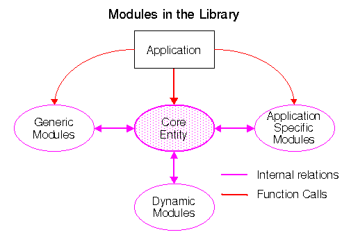

Architectural Overview
Before starting on the design phase of an application, it is
advantageous to get an overview of the fundamental concepts of the
Library and how it interacts with an application. Largely, it is
divided into four different categories of functions as indicated in
the figure:

- Core Entity
- This is the fundamental part of the Library. The core entity is not
a closed entity but an open frame construction that provides hooks for
the dynamic modules. It consists of an access manager, a thread manager,
a stream manager, a cache manager and some fundamental data structures.
The contents of the core entity is except for some major entry points
largely internal to the Library but the hooks are public and
initialized dynamically. Many of the sections through out this paper
contain references to the core entity and explain the interaction
between the core entity and an application.
- Dynamic Modules
- The dynamic modules can be enabled or disabled dynamically during
execution of an application. They consist of a set of converter streams
and protocol modules which are explained in the sections
Access Methods and Stream Interfaces. There
are several ways to initialize the dynamic modules:
- Through a configuration file (often called a rule file) which is
parsed at start up time
- Using static initialization functions which are created at compile
time
- By initializing the modules during execution as the application
requires it
The Library has a set of default, static initialization functions
which can be found in the HTInit module. By default
they enable all the dynamic modules in the Library, but this can be
changed as described later.
- Application Specific Modules
- These modules are often specific for client applications including
functions that require user interaction, management of history lists
etc. The default implementation of these modules in the reference code
is often simple and intended for simple character based applications
like the Line Mode Browser and more
advanced clients will often have to override them. That is, a module
with an identical interface is provided by the application, and the
loading of the defailt module suppressed. This is explained in detail
in the sections Keeping Track of History and User Prompts and Confirmations.
- Generic Modules
- The Library provides a large set of generic utility modules such
as various container classes, parsing modules etc. These modules are
characterized by being public available to the application programmer
so that they easily can be used in the application. They consist
mainly of three different types of modules:
- Container Modules
- Modules that support various types of memory management
- URI Management
- Code for parse, canonicalize, encode, and decode a URL
- Basic Utilities and Macro
Definitions
- These modules contain a large set of macros in order to make the
code more portable
The reader is referred to the Internals and
Programmer's Guide for a detailed description of these
modules.
The Library contains many data structures of which most are for
internal only and will not normally be referenced directly from
outside the Library. However, as the definition of a graphic object is
done by the application and not by the Library, a the following figure
gives a quick overview of the three most important data structures (or
objects) and how they are interconnected.

- HTRequest
structure
- The
request structure contains information intended
for the client application, the server application and for the Library
itself for how to fulfill a request. The default values of the
structure are appropiate for a client loadinf a document from either
an anchor or a URI.
Managing requests is described in section
The Request Object
- HTAnchor
structure
- Anchors represent any objects
which may be the sources or destinations of hypertext links. Anchors
contain all information about the object, whether it has been loaded,
known metainformation about the object (language, media type etc.),
and relations to other objects. Managing
anchors is
described in section The Anchor Object
- HyperDoc
structure
- The
HyperDoc structure is only declared in the
Library - the definition is left to the client application. For the Line Mode Browser, it is
defined in the GridText Module
where it is called _HText. It contains all information
needed to present and manage a
graphic object. The client is responsible for allocating and
freeing all graphic objects which may entail tradeoffs of
speed versus available resources. When the object is freed, the link
from the anchor structure must be put to
NULL. The dotted line symbolizes that it is free for the
client to create a HyperDoc object including a link to
the request structure.
Henrik Frystyk, libwww@w3.org, November 1995